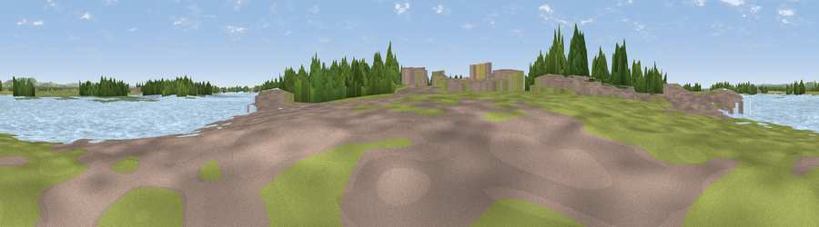

Viewpoint near West Itchenor
#44605 in England · top 99% of its area beats it · near West ItchenorThe view, rendered

A 360° render of this exact spot computed from the terrain model, tree cover and land cover — summer colours, afternoon light, calibrated against photographs of famous viewpoints. Real trees, hedges and buildings will differ in detail.
The panorama
Grey silhouette: terrain skyline in each direction (720 bearings, Earth curvature and refraction included). Dashed green: skyline with trees (+15 m) and buildings (+8 m) as obstacles. Blue strip: how far the ground is visible on each bearing.
Where the view opens
Wedge length = distance to the farthest visible ground on that bearing (vegetation-aware). Rings at 10, 25 and 50 km.
What fills the view
72% water · 11% grassland · 6% woodland · 4% cropland · 4% wetland · 3% built-up
Angular shares of the visible panorama (visual magnitude), not map area. Landscape diversity 0.44 (0–1 Shannon).
Key numbers
More beautiful places nearby
The staircase of upgrades: each row has a higher view potential than everything closer. Driving times are estimates from straight-line distance, calibrated against real road routing — check an actual route before setting out.
| Place | Direction | Drive | Score |
|---|---|---|---|
| Viewpoint near Birdham | E · 3 km | ~8 min | 23.9 |
| Easton Viewpoint | SSE · 6 km | ~12 min | 36.5 |
| Earnley Viewpoint. | SSE · 6 km | ~13 min | 45.6 |
| Ham Viewpoint | SSE · 7 km | ~15 min | 47.0 |
| Viewpoint near Stoughton | N · 9 km | ~17 min | 66.3 |
| Stoke Clump | NNE · 9 km | ~17 min | 72.5 |
| Viewpoint near Stoughton | NNE · 10 km | ~19 min | 75.1 |
| Viewpoint near Stoughton | NNE · 10 km | ~19 min | 79.5 |
50.80712, -0.86621 · source: osm viewpoint · position refined by local search. Computed location — check access rights before visiting.